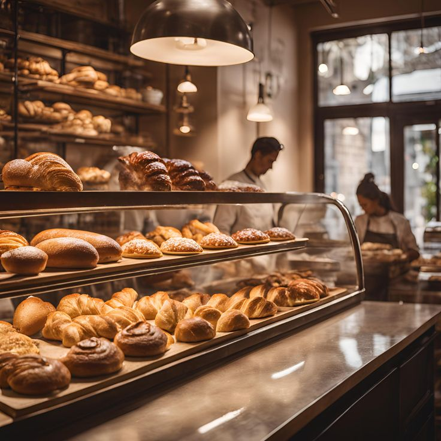

هنالك العديد من الأنواع المتوفرة لنصوص لوريم إيبسوم، ولكن الغالبية تم تعديلها بشكل ما عبر إدخال بعض النوادر أو الكلمات العشوائية إلى النص. إن كنت تريد أن تستخدم نص لوريم إيبسوم ما، عليك أن تتحقق أولاً أن ليس هناك أي كلمات أو عبارات محرجة أو غير لائقة مخبأة في هذا النص. بينما تعمل جميع مولّدات نصوص لوريم إيبسوم على الإنترنت على إعادة تكرار مقاطع من نص لوريم إيبسوم نفسه عدة مرات بما تتطلبه الحاجة، يقوم مولّدنا هذا باستخدام كلمات من قاموس يحوي على أكثر من 200 كلمة لا تينية، مضاف إليها مجموعة من الجمل النموذجية، لتكوين نص لوريم إيبسوم ذو شكل منطقي قريب إلى النص الحقيقي.
عملاء سعداء
سنوات الخبرة
عملاء الجملة
هنالك العديد من الأنواع المتوفرة لنصوص لوريم إيبسوم، ولكن الغالبية تم تعديلها بشكل ما عبر إدخال بعض النوادر أو الكلمات العشوائية إلى النص. إن كنت تريد أن تستخدم نص لوريم إيبسوم ما، عليك أن تتحقق أولاً أن ليس هناك أي كلمات أو عبارات محرجة أو غير لائقة مخبأة في هذا النص. بينما تعمل جميع مولّدات نصوص لوريم إيبسوم على الإنترنت على إعادة تكرار مقاطع من نص لوريم إيبسوم نفسه عدة مرات بما تتطلبه الحاجة، يقوم مولّدنا هذا باستخدام كلمات من قاموس يحوي على أكثر من 200 كلمة لا تينية، مضاف إليها مجموعة من الجمل النموذجية، لتكوين نص لوريم إيبسوم ذو شكل منطقي قريب إلى النص الحقيقي.
